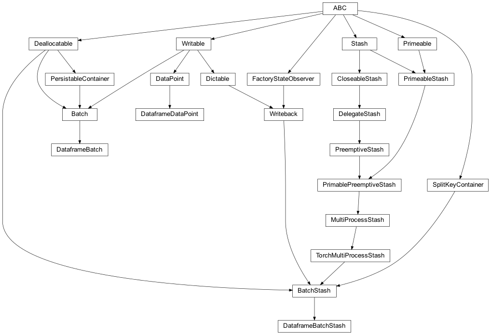
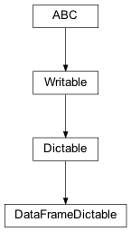
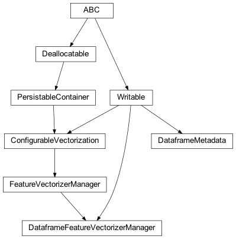

zensols.deeplearn.dataframe package¶
Submodules¶
zensols.deeplearn.dataframe.batch¶

An implementation of batch level API for Pandas dataframe based data.
-
class
zensols.deeplearn.dataframe.batch.DataframeBatch(batch_stash, id, split_name, data_points)[source]¶ Bases:
zensols.deeplearn.batch.domain.BatchA batch of data that contains instances of
DataframeDataPoint, each of which has the row data from the dataframe.-
__init__(batch_stash, id, split_name, data_points)¶ Initialize self. See help(type(self)) for accurate signature.
-
batch_stash: BatchStash¶
-
data_points: Tuple[DataPoint]¶
-
get_features()[source]¶ A utility method to a tensor of all features of all columns in the datapoints.
- Return type
- Returns
a tensor of shape (batch size, feature size), where the feaure size is the number of all features vectorized; that is, a data instance for each row in the batch, is a flattened set of features that represent the respective row from the dataframe
-
-
class
zensols.deeplearn.dataframe.batch.DataframeBatchStash(name, config_factory, delegate, config, chunk_size, workers, data_point_type, batch_type, split_stash_container, vectorizer_manager_set, batch_size, model_torch_config, data_point_id_sets_path, decoded_attributes=<property object>, batch_limit=9223372036854775807)[source]¶ Bases:
zensols.deeplearn.batch.stash.BatchStashA stash used for batches of data using
DataframeBatchinstances. This stash uses an instance ofDataframeFeatureVectorizerManagerto vectorize the data in the batches.-
__init__(name, config_factory, delegate, config, chunk_size, workers, data_point_type, batch_type, split_stash_container, vectorizer_manager_set, batch_size, model_torch_config, data_point_id_sets_path, decoded_attributes=<property object>, batch_limit=9223372036854775807)¶ Initialize self. See help(type(self)) for accurate signature.
-
batch_size¶
-
batch_type¶
-
data_point_id_sets_path¶
-
data_point_type¶
-
property
feature_vectorizer_manager¶ DataframeFeatureVectorizerManager- Type
rtype
-
model_torch_config¶
-
split_stash_container¶
-
vectorizer_manager_set¶
-
-
class
zensols.deeplearn.dataframe.batch.DataframeDataPoint(id, batch_stash, row)[source]¶ Bases:
zensols.deeplearn.batch.domain.DataPointA data point used in a batch, which contains a single row of data in the Pandas dataframe. When created, column is saved as an attribute in the instance.
-
__init__(id, batch_stash, row)¶ Initialize self. See help(type(self)) for accurate signature.
-
row: dataclasses.InitVar[Series]¶
-
zensols.deeplearn.dataframe.util¶

Utility functionality for dataframe related containers.
-
class
zensols.deeplearn.dataframe.util.DataFrameDictable[source]¶ Bases:
zensols.config.dictable.DictableA container with utility methods that JSON and write Pandas dataframes.
-
DEFAULT_COLS= 40¶ Default width when writing the dataframe.
-
NONE_REPR= ''¶ String used for NaNs.
-
__init__()¶ Initialize self. See help(type(self)) for accurate signature.
-
zensols.deeplearn.dataframe.vectorize¶

Contains classes used to vectorize dataframe data.
-
class
zensols.deeplearn.dataframe.vectorize.DataframeFeatureVectorizerManager(name, config_factory, torch_config, configured_vectorizers, prefix, label_col, stash, include_columns=None, exclude_columns=None)[source]¶ Bases:
zensols.deeplearn.vectorize.manager.FeatureVectorizerManager,zensols.config.writable.WritableA pure instance based feature vectorizer manager for a Pandas dataframe. All vectorizers used in this vectorizer manager are dynamically allocated and attached.
This class not only acts as the feature manager itself to be used in a
FeatureVectorizerManager, but also provides a batch mapping to be used in aBatchStash.-
__init__(name, config_factory, torch_config, configured_vectorizers, prefix, label_col, stash, include_columns=None, exclude_columns=None)¶ Initialize self. See help(type(self)) for accurate signature.
-
property
batch_feature_mapping¶ Return the mapping for
zensols.deeplearn.batch.Batchinstances.- Return type
-
column_to_feature_id(col)[source]¶ Generate a feature id from the column name. This just attaches the prefix to the column name.
- Return type
-
property
dataset_metadata¶ Create a metadata from the data in the dataframe.
- Return type
-
exclude_columns: Tuple[str] = None¶ The columns to be excluded, or if
None(the default), no columns are excluded as features.
-
include_columns: Tuple[str] = None¶ The columns to be included, or if
None(the default), all columns are used as features.
-
prefix: str¶ The prefix to use for all vectorizers in the dataframe (i.e.
adl_for the Adult dataset test case example).
-
stash: zensols.dataframe.stash.DataframeStash¶ The stash that contains the dataframe.
-
write(depth=0, writer=<_io.TextIOWrapper name='<stdout>' mode='w' encoding='utf-8'>)[source]¶ Write the contents of this instance to
writerusing indentiondepth.- Parameters
depth (
int) – the starting indentation depthwriter (
TextIOBase) – the writer to dump the content of this writable
-
-
class
zensols.deeplearn.dataframe.vectorize.DataframeMetadata(prefix, label_col, label_values, continuous, descrete)[source]¶ Bases:
zensols.config.writable.WritableMetadata for a Pandas dataframe.
-
__init__(prefix, label_col, label_values, continuous, descrete)¶ Initialize self. See help(type(self)) for accurate signature.
-
descrete: Dict[str, Tuple[str]]¶ A mapping of label to nominals the column takes for descrete mappings.
-
prefix: str¶ The prefix to use for all vectorizers in the dataframe (i.e.
adl_for the Adult dataset test case example).
-
write(depth=0, writer=<_io.TextIOWrapper name='<stdout>' mode='w' encoding='utf-8'>)[source]¶ Write the contents of this instance to
writerusing indentiondepth.- Parameters
depth (
int) – the starting indentation depthwriter (
TextIOBase) – the writer to dump the content of this writable
-
Module contents¶
Contains API framework code for vectorizing and batching dataframe data without the necessity of a domain specific model implementation.